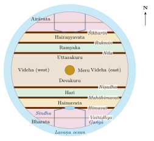

Chapter 5: Indian Maps, Plans and Diagrams¶
For a long time it was said that pre-modern India produced no maps. The claim was repeated by colonial writers and later by historians of science, and it rested largely on the fact that few Indian maps had found their way into European collections or been studied. The research that led to the History of Cartography, especially the long contribution on South Asia by Joseph E. Schwartzberg in the volume on traditional Islamic and South Asian societies (1992), showed that the claim was wrong, but also that the picture was more complex than a simple reversal (Harley and Woodward 1992).
Schwartzberg’s survey found a great variety of Indian maps and map-like representations: cosmographical diagrams, sacred and pilgrimage maps, route maps, maps of towns, forts and estates, architectural plans and a few nautical charts. At the same time it found that very few pre-modern Indian maps survive from before about 1500, that most surviving examples are from the seventeenth to nineteenth centuries, and that Indian mapping served purposes and followed conventions different from those of the European and Islamic traditions. Susan Gole’s illustrated survey of Indian maps and plans complements his work (Gole 1989). This chapter follows their findings.
5.1 What Counts as a Map?¶
The editors of the History of Cartography (vol. 1, 1987) define maps broadly, as “graphic representations that facilitate a spatial understanding of things, concepts, conditions, processes, or events in the human world” (Harley and Woodward 1987). On this definition a cosmological diagram, a painted pilgrimage scroll, a temple plan or a diagram for a ritual are all maps, even though they lack scale, a consistent orientation or a grid of coordinates. The definition is useful because it lets us see the range of Indian spatial representation. It does not mean that every such object served the same purposes as a modern topographic map.
Main Kinds of Indian Maps (after Schwartzberg)
-
Cosmographical maps: Purāṇic, Jain and Buddhist diagrams of the universe or of Jambūdvīpa.
-
Sacred and pilgrimage maps: pictorial maps of sacred sites, kṣetras and pilgrimage routes.
-
Route maps: strip maps or schematic maps of roads, with halting places and distances.
-
Maps of places: towns, forts, estates, villages and landholdings.
-
Architectural and ritual plans: temple and city plans, maṇḍalas.
-
Nautical charts: rare, and mostly late.
5.2 Cosmographical Maps¶
5.2.1 Jain Cosmographies¶
The richest body of cosmographical maps is Jain. From about the fifteenth century, and in great numbers in the seventeenth to nineteenth, Jain artists in western India painted on cloth and paper the “two and a half continents” (aḍhāī dvīpa) of the human world, Jambūdvīpa with its seven regions and six mountain ranges, and the cosmic person (lokapuruṣa) whose body contains the whole universe (Chapter 2). The aḍhāī dvīpa paṭas are circular diagrams with Jambūdvīpa at the centre, the rings of Lavaṇa ocean, Dhātakīkhaṇḍa, Kāloda ocean and the inner half of Puṣkaravara around it, populated with mountains, rivers, Merus, fish and boats. They were made for instruction and contemplation in Jain temples and households and are now in many museum collections (Caillat and Kumar 1981; Harley and Woodward 1992).
5.2.2 Reading a Jain Map of Jambūdvīpa¶
A typical Jain painting of Jambūdvīpa shows a circle with Meru at the centre, surrounded by the ring of the Lavaṇa ocean. Six ranges cross the circle from east to west, dividing it into seven bands, each coloured differently: Bharata at the bottom (south), Airāvata at the top (north), and the broad central band of Videha around Meru. Rivers flow from lakes on the mountains; in Bharata the Gaṅgā and the Sindhu flow from the Himavat range, and the Vaitāḍhya range crosses the land, so that Bharata is divided into six parts—the six parts that a universal emperor (cakravartin) conquers in Jain narrative. Labels in Sanskrit, Prakrit or Gujarati name the features, and the dimensions given in the texts are sometimes written in. Figure 5.1 shows the layout in schematic form. The map is at once a diagram of doctrine, an aid to memory and a work of art (Caillat and Kumar 1981). An aḍhāī dvīpa painting extends the same scheme outward to the two further continents and their four additional Merus, in the arrangement drawn in Figure 2.3a; the oceans are usually filled with fish, crocodiles and boats, and the continents with ranges, rivers and shrines.

5.2.3 Hindu and Buddhist Cosmographies¶
Hindu cosmographical maps are fewer and mostly late: painted diagrams of the Purāṇic earth-disc with its seven continents, of Jambūdvīpa and Meru, and, from the eighteenth and nineteenth centuries, a few terrestrial globes painted with the Purāṇic cosmos. In the Buddhist world, diagrams of Meru and the four continents were made in Tibet, Nepal, Burma and Thailand, and the same model was built into temple layouts and ritual offerings.
These objects are maps of a cosmos, not of the physical earth. Their value lies in what they show about how the world was imagined and taught; they should not be described as failed or symbolic attempts at world maps of the modern kind.
5.3 Sacred and Pilgrimage Maps¶
Many surviving Indian maps represent sacred places. They are usually pictorial: temples, tanks, rivers and hills are drawn in elevation, deities and pilgrims appear, and the scale is adjusted so that the most important shrine is largest. Examples include painted maps of the Jain temple-hill of Śatruñjaya, of Braj with its sacred groves and the caurāsī kos pilgrimage circuit, of the temple-town of Nāthdvārā, of Purī and of the routes to the Himalayan shrines of Garhwal. Some were made for pilgrims to take home, some for temples and patrons, some as guides. Their orientation varies: some put east at the top, some the direction of approach, some the main shrine at the centre with the rest arranged around it (Gole 1989).
Such maps share their logic with the māhātmya literature (Chapter 4): they represent a sacred place as a sequence of stations to be visited, rather than as a measured surface. Within that convention they could be very detailed and accurate in the relative positions of shrines, roads and water bodies.
5.4 Maps and Geographical Knowledge at the Mughal Court¶
The Mughal court’s written geography—above all the province-by-province description and statistics of the Āʾīn-i Akbarī (1590s), the road books and the regional descriptions in Persian—is the subject of Chapter 7. This section is concerned with maps. Irfan Habib’s Atlas of the Mughal Empire (1982) turned the written data into a set of modern maps of Mughal political and economic geography (Habib 1982); the Mughals themselves left relatively few.
5.4.1 Mughal and Indo-Persian Maps¶
Surviving Mughal maps are fewer than the written descriptions might lead one to expect. They include route maps, plans of forts and cities, and maps in Persian scholarly works written in India. Some manuscripts of Ṣādiq Iṣfahānī’s Shāhid-i Ṣādiq (1647) contain sectional maps on a grid of latitude and longitude (Section 7.5). In the eighteenth century large route maps and regional maps were made for Mughal successor states and for European patrons; the French officer Jean-Baptiste Gentil commissioned an atlas of the Mughal provinces from Indian artists in Faizabad in the 1770s (Gole 1989; Harley and Woodward 1992).
5.4.2 Globes and European Maps at the Mughal Court¶
European maps and globes reached the Mughal court through Jesuit missionaries and ambassadors from the late sixteenth century. Mughal painters adopted the globe as a symbol of world dominion: in allegorical paintings made for Jahāngīr in the 1610s and 1620s, the emperor is shown standing or seated on a globe, sometimes embracing the Safavid Shāh ʿAbbās or shooting an arrow at his enemies. The English ambassador Sir Thomas Roe records that he presented Jahāngīr with an atlas by Mercator, which the emperor later returned because none of his scholars could read it. The episode is often cited to show a lack of interest in European cartography; it may equally show that maps in a foreign script and convention were of little use to a court whose own geographical knowledge was organised in other ways.
Historical Note: Islamic Geographical Learning in India
Indo-Persian scholars inherited the geographical tradition of the Islamic world, with its seven climes (iqlīm), coordinate tables (zīj) and world maps. Al-Bīrūnī’s work on India (Chapter 6) belongs to this tradition, as do the astronomical tables compiled in India from the fourteenth century onward. Mughal geographical knowledge combined this learning with the administrative records of the empire and with Indian knowledge of the land (Chapter 7).
5.5 Rajput, Maratha and Other Regional Maps¶
5.5.1 Jaipur¶
The largest single collection of pre-colonial Indian maps is in the former royal archive of the Kachhwāhā rulers of Amber and Jaipur. It contains plans of the city of Jaipur, founded by Sawai Jai Singh II in 1727, of Amber, Delhi, Mathurā, Vṛndāvana and other places, and maps of estates and routes, drawn on cloth and paper in the eighteenth century. Jai Singh, the builder of the masonry observatories described in Chapter 3, had a strong interest in the mathematical sciences. Jaipur’s grid plan has often been explained as an application of the vāstupuruṣamaṇḍala (see below); Vibhuti Sachdev and Giles Tillotson have argued that this interpretation is a later reading, and that the plan reflects practical choices about site, water and trade as much as any canonical diagram (Sachdev and Tillotson 2002).
5.5.2 Marathas and Others¶
Maratha administration produced maps and plans of forts, routes and territories, especially in the eighteenth century, and much documentation survives in the Peshwa records in Pune; its cartographic content has not been fully studied. Many smaller states and estates had maps of boundaries and landholdings drawn for revenue purposes or disputes. In southern India, temple and village records described land in words, with boundaries defined by streams, trees, tanks and neighbouring fields, as copper-plate land grants had done for centuries; written boundary descriptions of this kind were often preferred to drawn maps (Harley and Woodward 1992).
5.6 Route Maps and Itineraries¶
Travellers, armies and merchants used itineraries listing stages and distances. Strip maps, which show a road as a straight band with towns, rivers and halting places along it, survive from the eighteenth century and were used by the Mughals and their successors. Such a map is read from one end to the other, like a written itinerary; its scale changes along its length, and turns in the road are straightened out. The roads themselves, with their sarāys and the kos mīnārs that marked the distances, are described in Chapter 8, and the itineraries in Persian in Chapter 7.
Colonial surveyors, beginning with James Rennell, made heavy use of these itineraries and of Indian route surveys, as Matthew Edney and Kapil Raj have shown (Chapter 14).
5.7 Plans, Grids and Maṇḍalas¶
5.7.1 Directions and Their Guardians¶
Space in Indian ritual and architecture was oriented by the four cardinal and four intermediate directions, each with a guardian deity (dikpāla; Table 5.1). The scheme is religious and architectural rather than geographical, but it shaped how space was described: maps, temple plans and even the Kūrmavibhāga are organised by direction.
| Direction | Guardian | Direction | Guardian |
|---|---|---|---|
| East (pūrva) | Indra | West (paścima) | Varuṇa |
| South-east (āgneya) | Agni | North-west (vāyavya) | Vāyu |
| South (dakṣiṇa) | Yama | North (uttara) | Kubera |
| South-west (nairṛta) | Nirṛti | North-east (aiśānya) | Īśāna |
5.7.2 The Gnomon and the East–West Line¶
The earliest Indian texts on laying out space are the Śulbasūtras, manuals for constructing Vedic fire altars, composed in the later Vedic period (conventionally c. 800–200 BCE). The Baudhāyana and Kātyāyana Śulbasūtras give a method for finding the east–west line: set up a gnomon, draw a circle round it, mark the two points where the tip of the shadow touches the circle before and after noon, and join them (Plofker 2009). The same method was used in Greek and Roman surveying. Altars were then laid out with cords and pegs using geometrical constructions, including the relation that we call Pythagoras’ theorem.
5.7.3 The Vāstupuruṣamaṇḍala¶
Texts on architecture describe a square grid, the vāstupuruṣamaṇḍala, of 64 or 81 squares (and other sizes), on which a building or settlement is planned. The grid is identified with the body of a being, the vāstupuruṣa, pinned down by the gods, who occupy its squares: Brahmā at the centre, the directional guardians and other deities round the edges. Varāhamihira’s Bṛhatsaṃhitā (chapter 53) gives an early account (Bhat 1981); later treatises on architecture elaborate it. The diagram is a ritual and design tool. It guided the placement of parts of a temple or house in relation to the directions and could be applied, in principle, to a town.
5.7.4 Village and Town Plans in the Śilpa Texts¶
Treatises on architecture such as the Mānasāra (date disputed; often placed in the second half of the first millennium CE, though parts may be later) and the Mayamata describe standard plans for villages and towns, including the daṇḍaka, sarvatobhadra, nandyāvarta, padmaka, svastika, prastara, kārmuka and caturmukha, which differ in the arrangement of streets and gates. These are prescriptive types; how far actual towns followed them is a matter for archaeology, and few historical towns match them closely. They show, however, a developed tradition of thinking about settlements in plan.
The Arthaśāstra (2.4) gives an earlier plan for a royal fort-city: three royal roads running east–west and three running north–south, twelve gates, the palace north of the centre, and quarters assigned to different deities, occupations and social groups (Olivelle 2013). Like the town plans of the architectural treatises, it is an ideal. Excavated early historic cities, such as Sisupalgarh in Odisha with its square rampart and regularly placed gateways, show that some cities were planned on regular lines, while others grew more irregularly.
5.8 Ritual Diagrams and Sacred Space¶
A further family of spatial representations belongs to ritual. In Hindu, Buddhist and Jain worship, diagrams drawn on the ground, painted on cloth or engraved on metal—maṇḍalas and yantras —map the abode of a deity and its retinue. A maṇḍala is typically a square palace with four gates, oriented to the directions and set within concentric circles, with the principal deity at the centre and attendant deities arranged around it; the worshipper enters it in imagination, moving from the outer enclosure to the centre. Tibetan monks construct such maṇḍalas in coloured sand and then destroy them; in South Asian domestic ritual, women draw geometrical designs (kolam, rangolī, alpanā) on thresholds and floors each day or at festivals.
These diagrams are not maps of territory, but they share with cosmographical and temple plans a way of thinking about space: as centred, bounded and oriented, with value increasing towards the centre. The same pattern can be seen in the layout of temple towns, with concentric streets for processions round the central shrine, as at Madurai and Śrīraṅgam, and in the Purāṇic picture of the world itself. Understanding this pattern helps to explain why so many Indian maps are organised around a centre rather than on a uniform grid.
5.9 Nautical Charts¶
Navigation in the Indian Ocean depended above all on the pilot’s knowledge of winds, stars, coasts and soundings, carried in memory and in written sailing directions (Chapter 11). The Arabic sailing manuals of Aḥmad ibn Mājid (later fifteenth century) and Sulaymān al-Mahrī (early sixteenth) describe routes along the coasts of India in detail (Tibbetts 1971). Indian pilots of Gujarat and other coasts had comparable knowledge, recorded in Gujarati and other languages in later centuries as rahmānīs (books of sailing directions).
Whether pilots also used drawn charts is uncertain. The Portuguese historian João de Barros, writing in the mid-sixteenth century, reports that at Malindi in East Africa in 1498 a pilot from Gujarat showed Vasco da Gama a chart of the whole coast of India, drawn with meridians and parallels. The pilot was later often identified with Ibn Mājid, but there is no good evidence for this. A handful of nautical charts drawn by Indian (mostly Kutchi and Gujarati) navigators survive from the nineteenth century. Schwartzberg concluded that the evidence for earlier Indian nautical charts is real but slight, and that the absence of surviving examples may reflect the practical, perishable and private nature of such charts (Harley and Woodward 1992).
5.10 Maps of India Made Outside India¶
India also appears on maps made elsewhere, and these show how its shape was imagined by others. The regional maps of the Balkhī school of Islamic geographers in the tenth century included a map of Sind with the Indus (Section 7.1). Al-Idrīsī’s world map and the sectional maps of his geography, completed for Roger II of Sicily in 1154, placed India in the first and second climes and drew its coast from Arabic sailors’ and merchants’ reports; S. Maqbul Ahmad’s edition and study of the Indian sections remains the guide to them (Ahmad 1960). When Ptolemy’s Geography was recovered in fifteenth-century Europe, maps drawn from his coordinates gave India its short, broad peninsula and enormous Taprobane (Section 6.1), until the Portuguese voyages replaced them.
In East Asia, Buddhist world maps placed Jambudvīpa, shaped as the Abhidharmakośa describes it (Figure 2.3b), at the centre of the world and filled it with the countries of India named in Xuanzang’s record. The best known are the Japanese maps of the “Five Indias” (Gotenjiku-zu); the earliest surviving example, kept at the temple of Hōryūji, is dated 1364. Such maps draw the route of the pilgrim through Central Asia and India, with Lake Anavatapta (identified with Mānasarovar) and its four rivers near the centre, and they remained the standard Japanese picture of the world until European maps arrived in the sixteenth century (Harley and Woodward 1994). They are a reminder that India’s own pilgrims’ and cosmographers’ geography travelled, and was mapped, far beyond the subcontinent.
5.11 Measuring the Land¶
Map-making is only one way of recording space. Pre-colonial Indian states measured and recorded land extensively, mostly in registers rather than on maps.
5.11.1 Cōḻa Land Surveys¶
Inscriptions of the Cōḻa kingdom record a general survey of land carried out under Rājarāja I around 1001 CE, and a resurvey under Kulottuṅga I in 1086. The officials responsible bore titles celebrating their work, and the measured holdings, their classification and the revenue due from them were recorded village by village. Later Cōḻa inscriptions refer back to these surveys when describing land. Boundary descriptions in Cōḻa and other South Indian grants are often minutely detailed, tracing a village’s edges from landmark to landmark.
5.11.2 The Mughal Revenue Survey¶
Under Akbar the revenue minister Todar Mal developed a system (zabṭ) in which cultivated land was measured field by field, crops were recorded, and the revenue was assessed on average yields and prices over a ten-year period (the dahsāla arrangement of 1580). Measurement was made with a standard chain (jarīb) of bamboo pieces joined by iron rings, introduced to replace the rope, which stretched and shrank with the weather, and areas were recorded in a standard bīghā. The resulting records were kept by local officials—the qānūngo at the level of the pargana and the village accountant (patwārī)—and formed the statistical basis of the Āʾīn-i Akbarī’s provincial accounts (Habib 1999). Village accountants’ records, maintained in later periods in many regions, became one of the main sources used by colonial revenue surveyors.
Such surveys show that pre-colonial states had a highly developed capacity to measure and record land. What they generally did not do was to combine their measurements into scaled maps; land was known as a set of measured holdings and named places linked by recorded boundaries and routes.
5.12 Assessing the Record¶
The surviving record can be summarised by kind of map and by the period from which most examples date (Table 5.2).
| Kind of map | Main period | Notes |
|---|---|---|
| Jain cosmographies | 15th–19th c. | cloth and paper; very numerous |
| Hindu and Buddhist cosmographies | mostly 18th–19th c. | diagrams and a few globes |
| Pilgrimage and sacred-site maps | 17th–19th c. | pictorial; mainly Rajasthan and Gujarat |
| Town, fort and estate plans | 17th–19th c. | Jaipur collection; Maratha plans |
| Route maps and strip maps | 18th–19th c. | Mughal successors; used by surveyors |
| Nautical charts | 19th c. | very few; earlier use in texts |
Geographic Insight: Why Do So Few Early Maps Survive?
Several reasons have been proposed: the perishable materials used (cloth, paper, palm leaf, drawings on the ground); the preference in Indian administrative practice for written descriptions of boundaries and itineraries rather than drawn maps; and the destruction of archives. The first two are well supported; the third applies to all periods and regions. The scarcity of early maps does not mean that Indians lacked spatial knowledge, but neither can the existence of a rich tradition of map-making be inferred from texts that do not mention maps. Each claim has to rest on surviving evidence.
Comparison with Europe should be made carefully. Indian cartography did not develop map projections or a systematic practice of scaled topographic mapping before the colonial period; European cartography did so from the fifteenth century onward, under the influence of the recovered Geography of Ptolemy and the needs of navigation and empire. Indian maps answered other needs—religious instruction, pilgrimage, the management of estates and the display of royal domains—and should be judged by how well they served them.
Further Reading¶
Harley and Woodward (1992) (Schwartzberg’s chapters on South Asia) and Gole (1989) are fundamental; Schwartzberg (1978) provides the historical maps. On Mughal geography see Habib (1982); on Jaipur, Sachdev and Tillotson (2002); on Indian Ocean navigation, Tibbetts (1971).